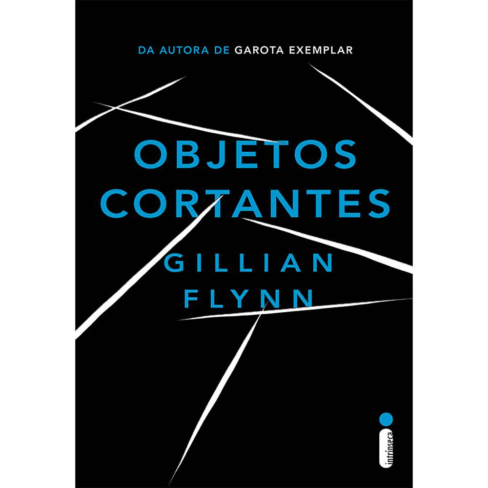

Rua C, N°21, São José Operário - Manaus/AM - Brasil
Nascimento: 17 de dezembro de 2000
Mobile/WhatsApp: +55 92 988466034
E-mail: marcosandre.araujo.c@gmail.com
Qual foi o maior ato de coragem?
Sinceramente, não me recordo de um maior ato de coragem que eu tenha feito. Acredito que coisas como essas acabam sendo inesquecíveis, então, se eu não me recordo provavelmente eu não tenha vivido um momento no qual fui extremamente corajoso.
Precisaria de muito tempo filosofando a respeito, por isso prefiro seguir com o singelo: "É pessoal demais"
O dia em que tive mais sorte na vida, foi o dia em que meu pai sofreu um acidente enquanto voltava da igreja causado por um homem bebado que estava em alta velocidade e bateu o carro dele mesmo ele subindo na calçada para tentar desviar. Mesmo com algumas dores, ele saiu ileso, sem nenhum membro quebrado e vivo. Então considero esse o meu dia de sorte, afinal, eu ainda tenho o meu pai vivo.
Gosto sim, porém não tenho, mais gostaria de ter um coelho e um cachorro.
|
|
Não tenho. Coração.
Brincadeira, não tenho time mesmo, mas vou colocar o link do site da seleção brasileira que teoricamente todos os brasileiros apoiam.
Seleção Brasileira de Futebol - Confederação Brasileira de FutebolSim, gosto do Homem de Ferro(Tony Stark) da Marvel. Porque ele é uma pessoa extremamente inteligente, usa a tecnologia como arma de combate frente aos vilões e cria aquela ideia de que ele poderia ser real, por ser o mais próximo da realidade e usar algo que nós já utilizamos(tecnologia) de uma forma diferente.
|
|
| Nome da Música | Trecho da Música |
| Hozier - Take Me To Church | |
| The Neighbourhood - Daddy Issues | |
| Gotye - Somebody That I Used to Know | |
| Lana del Rey - Born to Die | |
| The Neighbourhood - Wires |
|
|
Estudei em escolha pública todo o meu ensino fundamental e um ano do ensino médio, ja passei por diversas situações em que eu pude "sentir na pele" como é a estrutura do ensino público no Brasil. Então, quando tive a oportunidade de fazer a prova e quando descobri que passei, não pensei duas vezes e aceitei o desafio, independentemente do curso técnico, esse não foi um critério para estudar na FMM. Sinceramente, quando fui escolher as opções de curso na minha inscrição no processo seletivo, coloquei Informática simplesmente porque era algo que eu achava que seria fácil, na minha visão seria basicamente aprender a usar o pacote office e formatar computador. Fui tapeado.
|
|
|
|
|
|  |
|